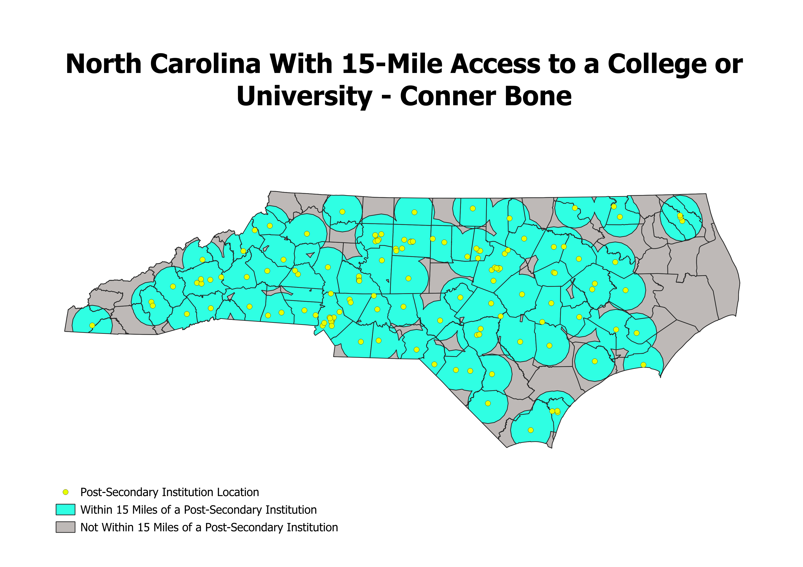

Homework 8
College and University Proximity Map

Methodology
words words words
Data Sources
15-Mile College or University Buffer
15-Mile College or University Difference
College and University Locations
North Carolina Counties